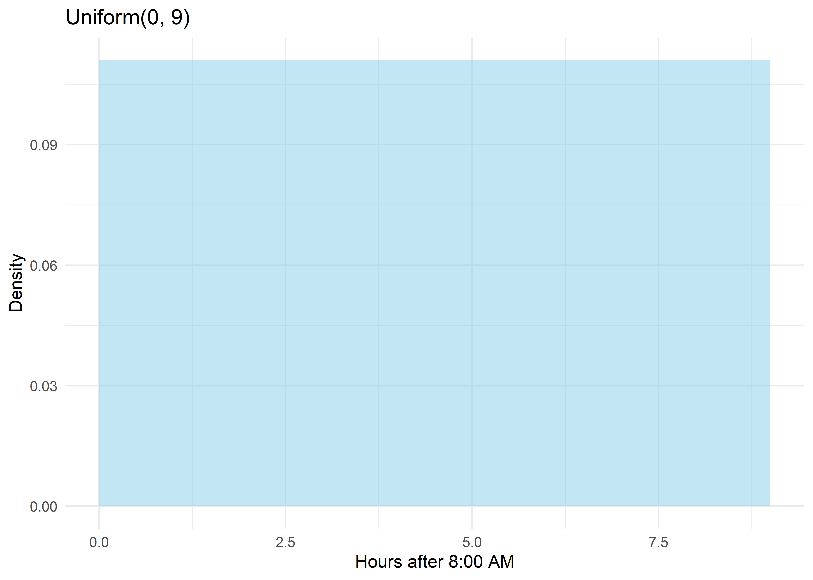
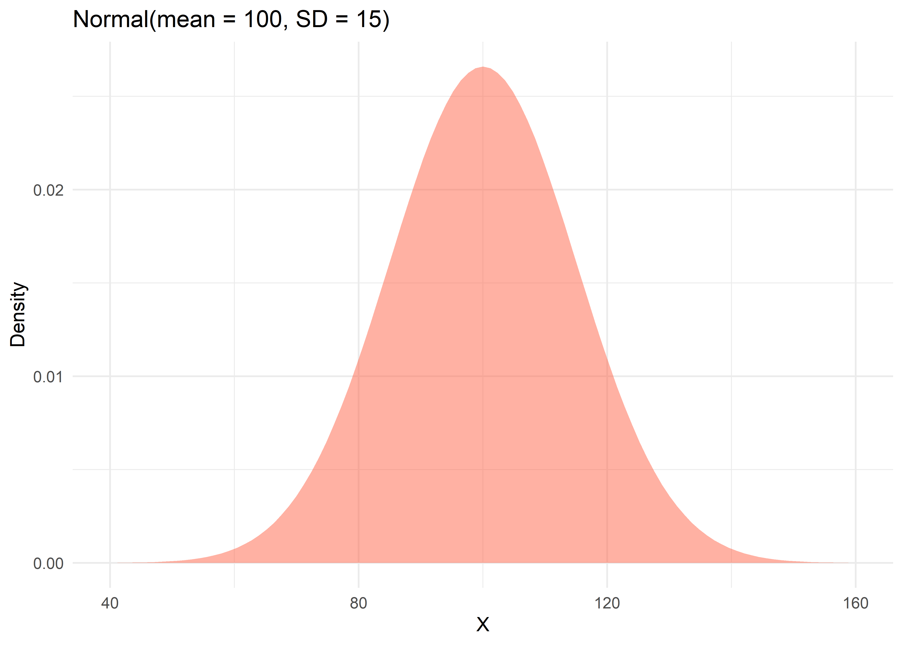
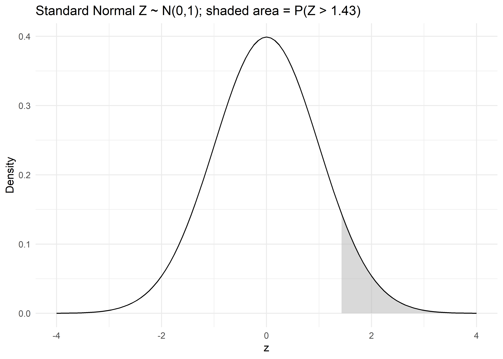
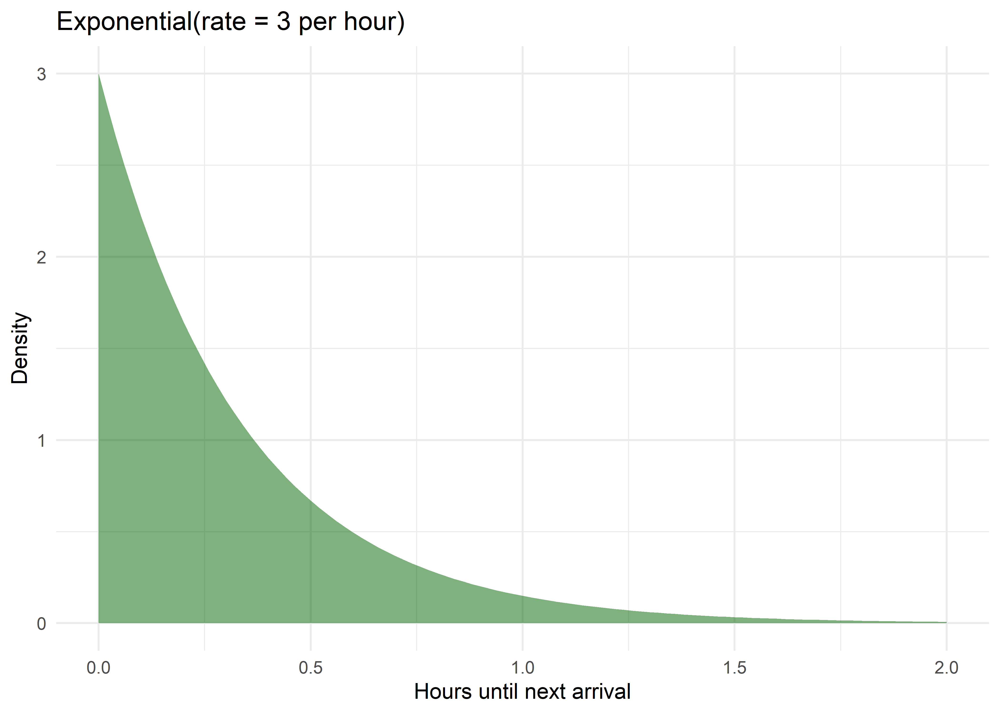
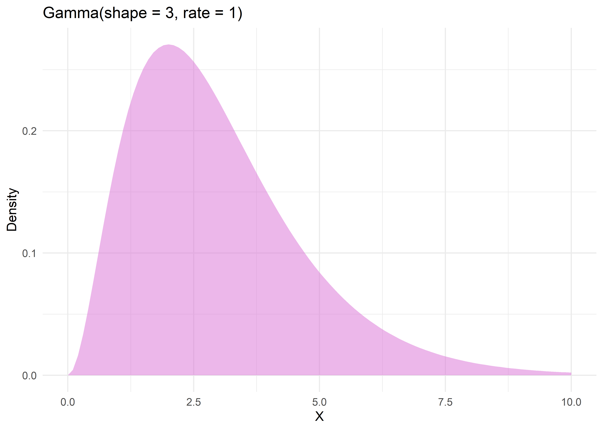
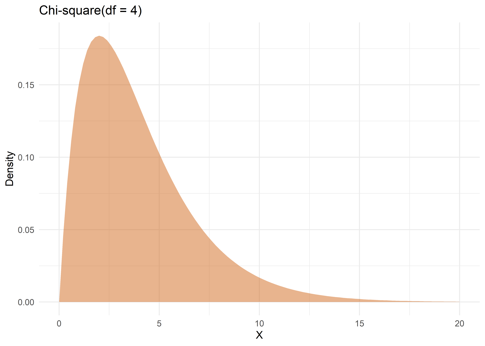
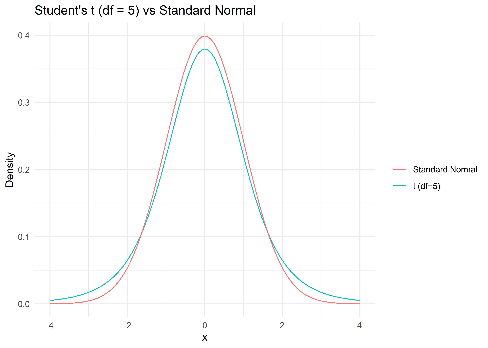
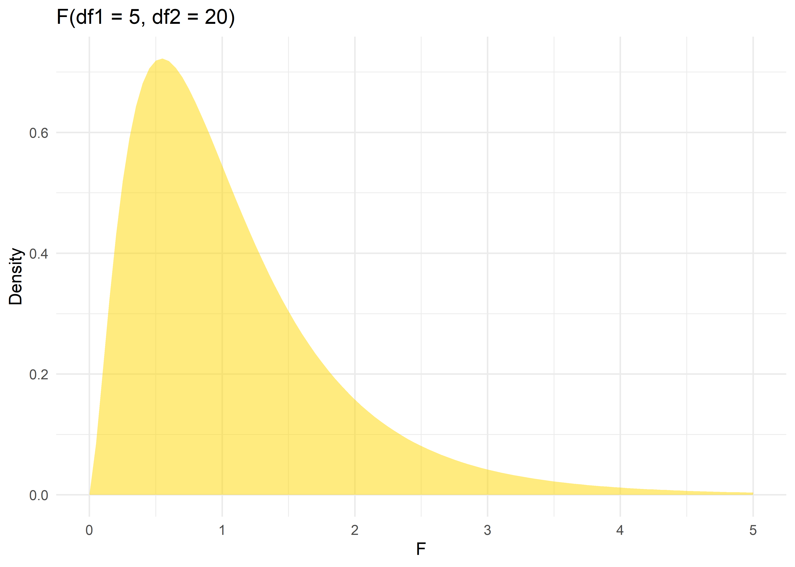

For a continuous random variable, probability is not assigned to individual points (which each have probability zero) but to intervals, via the probability density function (PDF), \(f(x)\). The probability that \(X\) falls between \(a\) and \(b\) is the area under the curve: \[P(a \le X \le b) = \int_a^b f(x)\,dx\]
A valid PDF satisfies \(f(x) \ge 0\) for all \(x\), and \(\int_{-\infty}^{\infty} f(x)\,dx = 1\) (total area under the curve equals 1).
All values in an interval \([a,b]\) are equally likely.
PDF and CDF
\[f(x) = \frac{1}{b-a}, \quad a \le x \le b \qquad \]\[F(x) = \frac{x-a}{b-a}\]
Parameters, Mean, Variance
Parameter
\(a\) = minimum, \(b\) = maximum
Mean
\(\dfrac{a+b}{2}\)
Variance
\(\dfrac{(b-a)^2}{12}\)
Properties
Constant (flat) density; symmetric about the midpoint \((a+b)/2\).
Applications / Public Health Example
Modeling a patient’s arrival time within a clinic’s operating hours as “equally likely” across the interval; simulation studies (uniform random number generation is the basis for simulating other distributions).
Worked Example
Appointment arrival times are uniformly distributed between 8:00 AM (\(a=0\)) and 5:00 PM (\(b=9\) hours). What is the probability a patient arrives in the first hour? \[P(0\le X\le1) = \frac{1-0}{9-0} = 0.111 \approx 11.1\%\]
R Code and Graph
ggplot(data.frame(x =c(0, 9)), aes(x)) +stat_function(fun = dunif, args =list(min =0, max =9), geom ="area", fill ="skyblue", alpha =0.5) +labs(title ="Uniform(0, 9)", x ="Hours after 8:00 AM", y ="Density") +theme_minimal()

Normal (Gaussian) Distribution
Definition
The most important distribution in statistics is a normal or Gaussian distribution. It is a symmetric, bell-shaped distribution characterized fully by its mean and standard deviation. Many biological measurements (height, blood pressure, IQ) are approximately Normal, and the Normal distribution is central to the Central Limit Theorem underlying most inferential methods (Sections 9-11).
Birth weight, height, blood pressure, cholesterol levels are frequently modeled as approximately Normal; the sampling distribution of the sample mean is approximately Normal for large \(n\) (Central Limit Theorem), justifying most confidence intervals and hypothesis tests in Sections 7.
R Code and Graph
ggplot(data.frame(x =c(40, 160)), aes(x)) +stat_function(fun = dnorm, args =list(mean =100, sd =15), geom ="area", fill ="tomato", alpha =0.5) +labs(title ="Normal(mean = 100, SD = 15)", x ="X", y ="Density") +theme_minimal()

Standard Normal Distribution
Definition
The special case of the Normal distribution with \(\mu=0\) and \(\sigma=1\), denoted \(Z \sim N(0,1)\). Any Normal variable can be converted (“standardized”) to the standard Normal using the z-score: \[Zscore = \frac{X-\mu}{\sigma}\]
PDF
\[f(z) = \frac{1}{\sqrt{2\pi}}e^{-z^2/2}\]
Worked Example (Manual Calculation)
Adult male height is Normally distributed with \(\mu=170\) cm, \(\sigma=7\) cm. What proportion of men are taller than 180 cm?
Step 1: Compute the z-score: \(z = \dfrac{180-170}{7} = 1.43\)
Step 2: Look up (or compute via software) \(P(Z>1.43)\): from the standard Normal table, \(P(Z\le1.43)=0.9236\), so \(P(Z>1.43) = 1-0.9236=0.0764\)
Step 3: Interpretation: approximately 7.6% of adult men are taller than 180 cm.
In R:1 - pnorm(180, mean = 170, sd = 7) returns 0.0764.
R Code and Graph
ggplot(data.frame(x =c(-4, 4)), aes(x)) +stat_function(fun = dnorm, geom ="area", fill ="gray70", alpha =0.5,xlim =c(1.43, 4)) +stat_function(fun = dnorm) +labs(title ="Standard Normal Z ~ N(0,1); shaded area = P(Z > 1.43)",x ="z", y ="Density") +theme_minimal()

Exponential Distribution
Definition
Models the waiting time (or distance) until the next event in a process where events occur at a constant average rate — the continuous analogue of the Geometric distribution, closely related to the Poisson process.
Exhibits the memoryless property: \(P(X>s+t\mid X>s)=P(X>t)\)
[The remaining waiting time does not depend on how long you have already waited]
Applications / Public Health Example
Time between successive patient arrivals at an emergency department; survival time in simple constant-hazard survival models; time until equipment failure in a medical device.
Worked Example
Patients arrive at an ED at an average rate of \(\lambda=3\) per hour. What is the probability the next patient arrives within 10 minutes (1/6 hour)?
Step 1:\(F(x) = 1-e^{-\lambda x}\), with \(\lambda=3\), \(x=1/6\)
ggplot(data.frame(x =c(0, 2)), aes(x)) +stat_function(fun = dexp, args =list(rate =3), geom ="area", fill ="darkgreen", alpha =0.5) +labs(title ="Exponential(rate = 3 per hour)", x ="Hours until next arrival", y ="Density") +theme_minimal()

Gamma Distribution
Definition
Generalizes the Exponential distribution to model the waiting time until the\(k\)-th event in a Poisson process (analogous to how Negative Binomial generalizes Geometric in the discrete case).
PDF
\[f(x) = \frac{\lambda^k x^{k-1}e^{-\lambda x}}{\Gamma(k)}, \quad x>0\] where \(\Gamma(k)\) is the Gamma function (for integer \(k\), \(\Gamma(k)=(k-1)!\)).
Parameters, Mean, Variance
Parameter
\(k\) (shape), \(\lambda\) (rate)
Mean
\(k/\lambda\)
Variance
\(k/\lambda^2\)
Properties
Right-skewed for small \(k\), approaching Normal shape as \(k\) increases
Exponential distribution is the special case at \(k=1\)
Chi-square distribution (below) is also a special case of the Gamma.
Applications / Public Health Example
Modeling time until \(k\) disease relapses occur; modeling right-skewed cost or length-of-stay data in health economics; modeling total rainfall or time until \(k\)-th case in an outbreak.
R Code and Graph
ggplot(data.frame(x =c(0, 10)), aes(x)) +stat_function(fun = dgamma, args =list(shape =3, rate =1), geom ="area", fill ="orchid", alpha =0.5) +labs(title ="Gamma(shape = 3, rate = 1)", x ="X", y ="Density") +theme_minimal()

Chi-Square Distribution
Definition
The distribution of the sum of squares of\(k\) independent standard Normal variables; a special case of the Gamma distribution (\(k\) degrees of freedom, rate \(=1/2\)). Central to goodness-of-fit tests, tests of independence in contingency tables, and the sampling distribution of the sample variance.
\[X = \sum_{i=1}^{k} Z_i^2 \sim \chi^2_k\]
Parameters, Mean, Variance
Parameter
\(k\) = degrees of freedom
Mean
\(k\)
Variance
\(2k\)
Properties
Right-skewed, especially for small \(k\)
Becomes more symmetric (approaching Normal) as \(k\) increases
Always non-negative.
Applications / Public Health Example
Chi-square test of independence for contingency tables (e.g., testing association between vaccination status and infection outcome); goodness-of-fit tests; constructing confidence intervals for a population variance.
R Code and Graph
ggplot(data.frame(x =c(0, 20)), aes(x)) +stat_function(fun = dchisq, args =list(df =4), geom ="area", fill ="chocolate", alpha =0.5) +labs(title ="Chi-square(df = 4)", x ="X", y ="Density") +theme_minimal()

Student’s t-Distribution
Definition
Similar in shape to the standard Normal, but with heavier tails, used when estimating a population mean with an unknown population variance and a small sample size (the sample SD, \(s\), is used in place of \(\sigma\)).
Heavier tails than the standard Normal, especially for small \(\nu\); converges to the standard Normal as \(\nu\to\infty\) (in practice, \(t\) and \(Z\) are nearly identical for \(\nu>30\)).
Applications / Public Health Example
The basis for the one-sample and two-sample t-tests and t-based confidence intervals for means (used throughout later chapters) when sample sizes are small and population SD is unknown, the standard situation in most clinical studies.
R Code and Graph
ggplot(data.frame(x =c(-4, 4)), aes(x)) +stat_function(fun = dt, args =list(df =5), aes(color ="t (df=5)")) +stat_function(fun = dnorm, aes(color ="Standard Normal")) +labs(title ="Student's t (df = 5) vs Standard Normal", x ="x", y ="Density", color ="") +theme_minimal()

F Distribution
Definition
The distribution of the ratio of two independent chi-square variables, each divided by their own degrees of freedom, used to compare two variances, and as the basis for ANOVA (Analysis of Variance).
Complex expression involving both \(d_1,d_2\) (for \(d_2>4\))
Properties
Right-skewed, always non-negative; shape depends on both degrees of freedom; approaches Normal-like shape as both \(d_1,d_2\) grow large.
Applications / Public Health Example
Comparing variability between two treatment groups (F-test for equal variances); the basis of ANOVA, used to compare means across three or more groups (e.g., comparing mean recovery time across three treatment protocols).
R Code and Graph
ggplot(data.frame(x =c(0, 5)), aes(x)) +stat_function(fun = df, args =list(df1 =5, df2 =20), geom ="area", fill ="gold", alpha =0.5) +labs(title ="F(df1 = 5, df2 = 20)", x ="F", y ="Density") +theme_minimal()

Comparison Table — Continuous Distributions
Distribution
Range
Parameters
Mean
Variance
Shape
Typical Use
Uniform
\([a,b]\)
\(a, b\)
\((a+b)/2\)
\((b-a)^2/12\)
Flat
Equally likely outcomes
Normal
\((-\infty,\infty)\)
\(\mu,\sigma\)
\(\mu\)
\(\sigma^2\)
Symmetric, bell
Biological measurements, CLT
Standard Normal
\((-\infty,\infty)\)
none (\(\mu=0,\sigma=1\))
0
1
Symmetric, bell
z-scores, standardization
Exponential
\([0,\infty)\)
\(\lambda\)
\(1/\lambda\)
\(1/\lambda^2\)
Right-skewed
Waiting times, survival
Gamma
\([0,\infty)\)
\(k,\lambda\)
\(k/\lambda\)
\(k/\lambda^2\)
Right-skewed
Time to \(k\)-th event, cost data
Chi-square
\([0,\infty)\)
\(k\) (df)
\(k\)
\(2k\)
Right-skewed
Variance tests, goodness-of-fit
Student’s t
\((-\infty,\infty)\)
\(\nu\) (df)
0
\(\nu/(\nu-2)\)
Symmetric, heavy tails
Small-sample mean inference
F
\([0,\infty)\)
\(d_1,d_2\) (df)
\(d_2/(d_2-2)\)
complex
Right-skewed
ANOVA, variance ratio tests
Decision Guide: Which Continuous Distribution Should I Use?
flowchart TD Q1{"What are you modeling?"} --> Q2["A single continuous<br/>measurement, symmetric,<br/>bell-shaped?"] Q1 --> Q3["Waiting time / time-to-event?"] Q1 --> Q4["A test statistic for<br/>inference?"] Q1 --> Q5["All outcomes<br/>equally likely in a range?"] Q2 -->|Yes| Normal["Use Normal<br/>(or Standard Normal if standardized)"] Q3 -->|"Time to 1st event"| Expo["Use Exponential"] Q3 -->|"Time to k-th event"| Gam["Use Gamma"] Q5 -->|Yes| Unif["Use Uniform"] Q4 --> Q6{"Comparing a mean,<br/>small n, sigma unknown?"} Q4 --> Q7{"Testing a variance or<br/>categorical association?"} Q4 --> Q8{"Comparing variances<br/>across 3+ groups (ANOVA)?"} Q6 -->|Yes| Tdist["Use Student's t"] Q7 -->|Yes| Chisq["Use Chi-square"] Q8 -->|Yes| Fdist["Use F distribution"]
flowchart TD
Q1{"What are you modeling?"} --> Q2["A single continuous<br/>measurement, symmetric,<br/>bell-shaped?"]
Q1 --> Q3["Waiting time / time-to-event?"]
Q1 --> Q4["A test statistic for<br/>inference?"]
Q1 --> Q5["All outcomes<br/>equally likely in a range?"]
Q2 -->|Yes| Normal["Use Normal<br/>(or Standard Normal if standardized)"]
Q3 -->|"Time to 1st event"| Expo["Use Exponential"]
Q3 -->|"Time to k-th event"| Gam["Use Gamma"]
Q5 -->|Yes| Unif["Use Uniform"]
Q4 --> Q6{"Comparing a mean,<br/>small n, sigma unknown?"}
Q4 --> Q7{"Testing a variance or<br/>categorical association?"}
Q4 --> Q8{"Comparing variances<br/>across 3+ groups (ANOVA)?"}
Q6 -->|Yes| Tdist["Use Student's t"]
Q7 -->|Yes| Chisq["Use Chi-square"]
Q8 -->|Yes| Fdist["Use F distribution"]
Summary
Continuous distributions use a PDF (density, area = probability) and CDF (cumulative probability) rather than a PMF.
The Normal distribution is central to biostatistics because of the Central Limit Theorem; the Standard Normal enables z-score based probability calculations.
The Exponential and Gamma distributions model waiting times, closely paralleling the discrete Geometric and Negative Binomial distributions.
The Chi-square, Student’s t, and F distributions are not typically used to model raw data directly — they arise as sampling distributions of test statistics, and are the foundation of the hypothesis testing methods introduced in Sections 9-11 and developed throughout the rest of this book.
Sections 9-11 now turn from probability theory to statistical inference: using these distributions to test hypotheses and estimate population parameters from sample data.